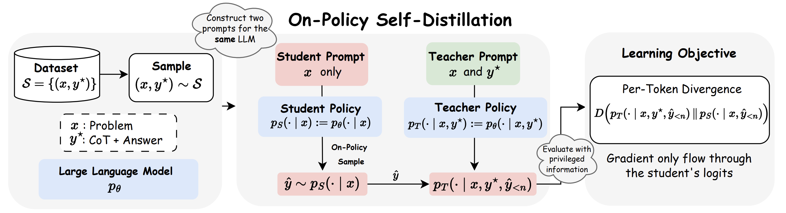
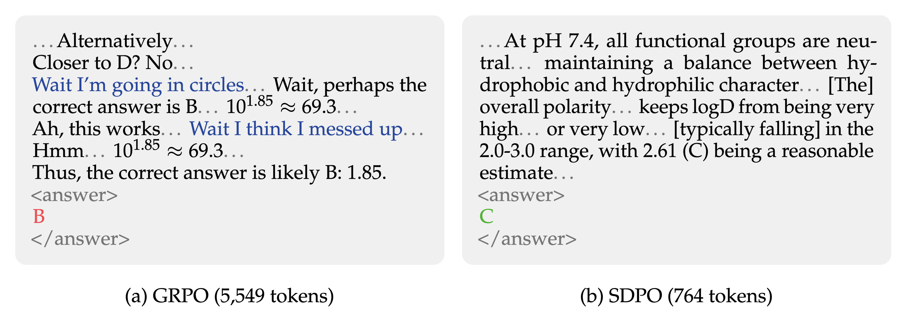
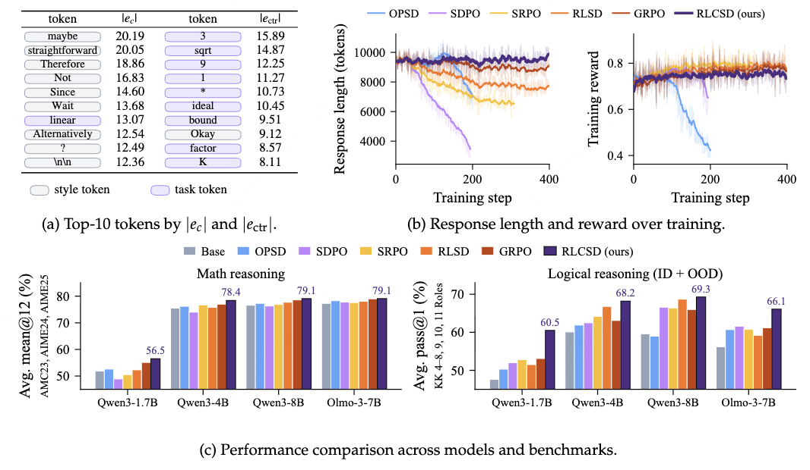
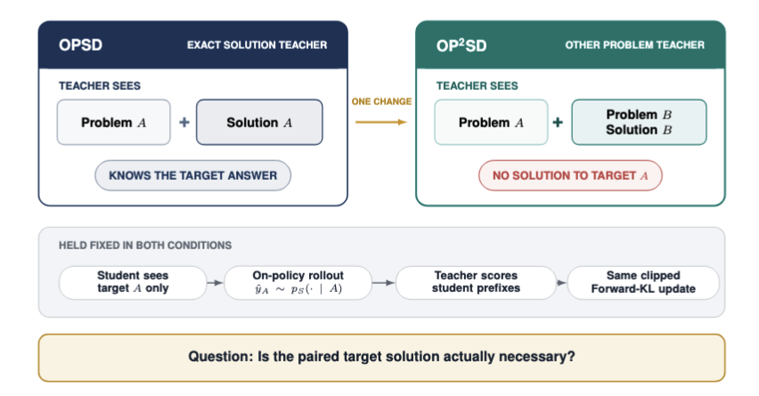

0. 这一支在做什么
前八篇的 OPD 都需要一个另外的、更强的 teacher。OPSD（On-Policy Self-Distillation）把这个条件去掉了：teacher 就是 student 自己，只是 teacher 能看到 student 看不到的信息。
记 $x$ 为问题，$c$ 为特权信息（reference solution、环境反馈、示范、系统提示等），$\hat y\sim p_\theta(\cdot|x)$ 为 student 的采样。teacher 是同一个模型在多了 $c$ 的上下文下的分布 $p_\theta(\cdot|x,c,\hat y_{<n})$。训练让 student 在自己的样本上，逐 token 去接近这个"知道更多的自己"。
这条思路很吸引人：不需要更大的模型，不需要奖励模型，有一份带答案的数据就能做。2026 年上半年相关论文非常多。但到下半年，一批分析和复现工作发现，"自己看了答案"这个 teacher 传给 student 的不只是知识，还有看了答案之后才有的说话方式。这一篇前半部分按时间讲方法，后半部分讲这些问题，最后整理"什么时候让 teacher 多看信息是合理的"。
一张表概括本篇涉及的工作（"特权信息"一列是这条分支最重要的设计变量）：
| 工作 | 特权信息 $c$ | teacher | 散度 | 是否 on-policy |
|---|---|---|---|---|
| Context distillation（Askell 2021） | 长 HHH 提示 | 冻结 | forward KL，语料文本上 | 否 |
| Snell 2022 | 指令 + scratchpad | 同一模型 | 在 teacher 样本上 SFT | 否 |
| OPCD | 经验总结、系统提示 | 冻结副本 | reverse KL（top-k） | 是 |
| OPSD | 数据集里的参考解答 | 冻结在初始化 | v3：forward KL + 逐项裁剪 | 是 |
| SDPO | 同组成功样本 / 环境反馈 | EMA 或与初始 teacher 插值 | 写作 reverse KL，实际用 JSD | 是 |
| SDFT | 示范 | student 的 EMA | forward KL（勘误） | 是 |
| π-Distill | 前沿模型轨迹中的工具调用 | 共享权重 | 混合 | 主方法否 |
1. 源头：context distillation
把"带提示的自己"蒸馏进"不带提示的自己"并不是新想法。
Askell et al. 2021（Anthropic，A General Language Assistant as a Laboratory for Alignment，§2.1）为了省掉一段约 4,600 词的 HHH 提示，定义了 context distillation：
$$\mathcal L(\theta)=D_{\rm KL}\big(p_0(X|C)\,\|\,p_\theta(X)\big)$$
$C$ 是提示，$p_0$ 是冻结的原模型，$X$ 取自大规模语料（比如预训练分布）。这是 forward KL，而且样本不是 student 生成的，所以不是 on-policy。结论是在"多数但不是全部"评测上，蒸馏后的效果与带提示相当。
Snell, Klein, Zhong 2022（Learning by Distilling Context）让模型在带指令的情况下写出 scratchpad 和答案，再用不带指令的输入去 SFT 最终答案，在 SPIDER Text-to-SQL 上比直接用样例做梯度下降高 9%。OPSD 论文自己的相关工作部分说这篇"思路上最接近……可以看作 off-policy 的版本"。所以"context distillation → on-policy context distillation → OPSD"这条线索是作者自己认可的。
1.1 OPCD：先把 on-policy 加上
OPCD（Ye et al., Microsoft Research, 2602.12275）把 context distillation 改成 on-policy：student 在不带上下文 $c$ 的情况下采样，在自己的样本上对"带 $c$ 的 teacher"做逐 token reverse KL（用 student 的 top-k 近似全词表，代码里 k=256）。$c$ 有两类：从模型自己过去的轨迹中总结出的经验条目（不需要标签），以及优化过的系统提示。
结果（Table 1、3）：Qwen3-8B 数学从 75.0 到 79.7，off-policy context distillation 是 78.5；Frozen Lake 上 22.9 → 26.5；医疗系统提示（Llama-3.2-3B）71.0 → 76.3；安全系统提示上两者持平（83.3 vs 83.1）。比 off-policy 版本多出的通常只有 1–3 分。
这篇论文最值得记住的是 Table 5：冻结的 teacher 远好于和 student 共享、一起更新的 teacher。Sokoban 上 53.9 vs 18.8，医疗任务上 56.8 vs 50.0，论文说共享权重的版本"训练中可能发散"。后面的 OPSD 也选择了冻结 teacher。
2. OPSD：用参考解答当特权信息
OPSD（Zhao et al., UCLA / HKU / Meta, 2601.18734, Self-Distilled Reasoner）给这个分支起了名字。动机是：GRPO 每个问题要采 8 条 16k token 的样本，全对或全错的组没有梯度；在简短的参考解答上 SFT 反而有害；普通 OPD 又需要另一个更大的 teacher。

teacher 的提示是"问题 + 参考解答 + 'After understanding the reference solution, please try to solve this problem using your own approach below:'"。teacher 不生成，只对 student 的样本打分。目标函数（v3 Eqs. 6–8）：
$$\mathcal L(\theta)=\mathbb E_{(x,y^\star)}\,\mathbb E_{\hat y\sim p_S(\cdot|x)}\Big[\frac1{|\hat y|}\sum_{n} D\big(p_T(\cdot|x,y^\star,\hat y_{<n})\,\|\,p_S(\cdot|x,\hat y_{<n})\big)\Big]$$
其中 $p_T=p_\theta(\cdot|x,y^\star)$，$p_S=p_\theta(\cdot|x)$。两个实现细节很关键：
- teacher 冻结在初始参数（用 LoRA 训练，teacher 用关掉 LoRA 的原权重）。作者说这"有助于稳定训练，隐式地起到正则作用"。
- 逐项裁剪：对词表中每个 token 的散度项 $\ell_{n,v}$ 先取 $\min(\ell_{n,v},\tau)$ 再求和。论文 Fig. 4 显示不裁剪时 1.7B 的 AIME24 会崩溃。为什么需要裁剪，第 4 节会讲到：少数风格 token 的散度特别大。
2.1 v1 到 v3：换了配方，也换了结论
这篇论文有三个版本。README（2026-03-18）说修复了 chat template 和 ZeRO-2 的 bug（TRL issue #5241）后重跑了实验。但比较 v1 和 v3 的 PDF 会发现，变的不只是 bug：
| v1（2026-01） | v3（2026-03） | |
|---|---|---|
| 散度 | JSD，β=0.5 | forward KL + 逐项裁剪 |
| 采样长度 | 2048 | 1024 |
| 学习率 | 2e-5 | 5e-6 |
| 评测 | avg@16（含 AMO-Bench） | avg@12 |
| Qwen3-1.7B 平均：GRPO vs OPSD | 30.5 vs 30.4 | 37.7 vs 43.4 |
也就是说，1.7B 上的结论从"和 GRPO 差不多"变成了"比 GRPO 高 5.7 分"。v3 的 Table 3 还显示 v1 的主目标 JSD(0.5) "收益有限或为负"（AIME25：forward KL 43.9，reverse KL 37.5，JSD 36.9，基线 36.7）。
v3 的主结果（Table 2，AIME24 / AIME25 / HMMT25 / 平均）：
| 模型 | base | SFT | GRPO | OPSD |
|---|---|---|---|---|
| Qwen3-1.7B | 37.1 | 35.8 | 37.7 | 43.4（57.2 / 43.9 / 29.2） |
| Qwen3-4B | 61.2 | 58.6 | 62.7 | 63.6 |
| Qwen3-8B | 61.8 | 59.8 | 64.0 | 64.8 |
读这张表需要知道：
- 表中报告的是每 20 步保存一次、共 100 步中表现最好的检查点，而挑选依据就是这些测试集本身（见表注）。GRPO 同样报告 500 步内的峰值。README 中的曲线不是单调的，例如 8B 非思考模式的 AIME24 依次是 49.7 → 45.3 → 38.3。
- 只有一个训练种子，AIME 和 HMMT 各只有 30 题。作者在 README 里也写了"应该采用多种子评测"。
- 4B、8B 上的优势只有 0.8–0.9 分；8B 的 HMMT25 上 GRPO 更好（46.7 vs 45.8）。
- "token 效率"比较的是 1 条 × 1024 token 对 8 条 × 16k token，优势有一部分来自预算设置本身。
- PDF 用的是 ICML 2026 模板，元数据写着 ICML 2026，但我没有在 icml.cc 上确认录用。
独立复现见第 5.1 节（OP²SD）：4 个解码种子下 OPSD 确实优于 base，但幅度比 v3 小（1.7B 的 AIME25 是 +3.0，v3 写的是 +7.2）。
3. 同期的其他核心工作
3.1 SDPO：特权信息是环境反馈
SDPO（Hübotter et al., ETH Zurich 等, 2601.20802）的标题是 Reinforcement Learning via Self-Distillation。它关心的场景是"带丰富反馈的 RL"：环境返回的不只是 0/1，还有报错信息、测试输出等文字，标量 RLVR 把这些都丢了。
teacher 的上下文是：如果同组有成功的样本，就放"Correct solution: {成功样本}"；否则放"The following is feedback from your unsuccessful earlier attempt: {环境输出}"。注意成功样本来自同一批次的 student 采样，不是数据集里的标准答案。
论文的 Eq. 1 写的是逐 token reverse KL，但 §2.3 说"实践中采用对称的 Jensen-Shannon 散度"；teacher 用 student 参数的 EMA，或与初始 teacher 插值来稳定，这一点和 OPSD 的冻结 teacher 不同。从优势函数的角度看（Prop. 2.1），SDPO 给每个 token 的信号是
$$A_t=\log\frac{\pi_\theta(\hat y_t|x,f,\hat y_{<t})}{\pi_\theta(\hat y_t|x,\hat y_{<t})},$$
即反馈 $f$ 让这个 token 的概率变了多少；teacher 和 student 一致的地方信号为零。
结果：LiveCodeBench v6 上 Qwen3-8B 最终 48.8%，GRPO 41.2%，达到 GRPO 最终水平所需的生成次数少 4 倍。没有丰富反馈的科学问答（SciKnowEval）上也大多更好，但不是全部（Olmo3 工具使用 62.1 vs 65.0，Qwen3-8B 生物 56.8 vs 59.9）。作者观察到收益随模型规模增大，因为"自我教学的能力随上下文学习能力变强而出现"。
论文强调 SDPO 的回答"最多短 11 倍"。下图是项目页上的对比：

这张图值得从两面看。在这个例子里，简洁是好事。但第 4 节会讲到，后来的研究认为这种简洁很大程度上来自"看了答案的 teacher"的语气：它不再犹豫、不再验证。在题型多样的数学任务上，这种行为会伤害推理。
3.2 SDFT：用于持续学习，以及一个 KL 方向的勘误
SDFT（Shenfeld, Damani, Hübotter, Agrawal, MIT / ETH, 2601.19897, Self-Distillation Enables Continual Learning）关心的是另一个问题：只有示范、没有奖励函数时，怎样学新技能而不遗忘旧能力。SFT 是 off-policy 的，会遗忘；SDFT 让 teacher 看到示范（"This is an example for a response to the question: … Now answer with a response of your own"），student 在自己的样本上学习。teacher 默认是 student 的 EMA。
勘误：论文 Eq. 1 和项目页的示意图都写的是 reverse KL。但 README（2026-04-07）说"论文中所有结果都是 on-policy 采样加逐 token forward KL（类似 GKD）得到的"，v2 正文也说"实践中 forward KL 效果最好"。所以 SDFT 不应被归为"reverse KL 的 OPD"。
结果：知识获取任务（约 20 万 token 的 2025 年灾害维基百科）上，严格 / 宽松 / 分布外准确率 SFT 是 80 / 95 / 80，SDFT 是 89 / 100 / 98，接近带检索的上限 91 / 100 / 100。用没有推理过程的示范训练 Olmo-3-7B-Think，SFT 从 31.2% 降到 23.5%，SDFT 升到 43.7%。规模上，3B 时 SDFT 不如 SFT，7B 高约 4 分，14B 高约 7 分。
SDFT 论文坦白了两个问题，都和本篇后半部分有关：
- 泄漏：student 会学到"Based on the text…""Following the example…"这样的说法，尽管它从来没看到过示范。作者的修补办法是不在开头几个 token 上算损失，并承认这是启发式的。
- 当目标需要"根本改变模型的生成方式"时（例如教一个不会推理的模型写 CoT）效果不好；模型需要足够的上下文学习能力（3B 不行）。
另外 SDFT 的成本约为 SFT 的 2.5 倍 FLOPs、4 倍墙钟时间。
3.3 π-Distill：agent 场景，以及"OPSD"这个名字的另一种用法
π-Distill（Penaloza et al., ServiceNow / Mila 等, 2602.04942，ICML 2026 poster）想蒸馏前沿 agent，但只能看到它们的动作，看不到思维链。特权信息是从 DeepSeek-V3.1 成功轨迹中提取的工具调用（带参数或不带参数）。
需要注意两点：
- π-Distill 的主方法让 student 从 teacher 生成的轨迹中学习（带重要性权重），所以不是 on-policy 的。
- 论文里有一个叫"OPSD"的对照方法，但它是"奖励 + 对自己的 reverse KL 惩罚"，即带自我 teacher 正则的 RL，不是纯蒸馏，和 Zhao et al. 的 OPSD 不同。
结果（Table 1，3 个种子，TravelPlanner / τ-Bench retail / τ-Bench airline）：Qwen3-8B 上 SFT+RL 32.3 / 29.1 / 8.00，OPSD 37.5 / 27.3 / 14.0，π-Distill (α=1) 44.1 / 29.7 / 9.33。标准差很大（多处 ±6–7），airline 的个位数结果误差约 ±5。在 R1-Distill-Llama-8B 上 OPSD 失败。分析部分发现初始 teacher–student KL 越大，最终效果一般越差。
4. 问题：看了答案的 teacher 还传递了什么
把 teacher 的逐 token 信号写开：
$$\log p_\theta(y_t|x,c,y_{<t})-\log p_\theta(y_t|x,y_{<t})$$
这是 token 和特权信息 $c$ 之间的逐点互信息。它包含两部分：
- 任务信息：知道答案后，正确的下一步概率变高。这是我们想要的。
- 上下文带来的行为变化：知道答案后，模型说话更自信、更简短，会引用"上面的例子"，提前结束。这部分 student 在测试时不可能有依据。
2026 年下半年的多篇论文表明，第二部分经常比第一部分还大。
4.1 风格 token 主导了散度
- OPSD 自己的附录 Table 5：风格词（"wait""think"等）的逐 token forward KL 是数学 token 的约 6–13 倍。按我对论文数字的计算，所选配置下 1.7B / 4B / 8B 分别约 6.1、9.2、13.2 倍。README 里"6–15 倍"的说法就是从这里来的。不过这只是 10 道题上按固定关键词表分类的统计，证据偏弱。
- RLCSD（Pan et al., 2606.11709）把这个现象叫"特权导致的风格漂移"。按单侧信号排序，绝对值最大的 token 是"maybe""straightforward""Therefore""Wait"这类风格词，平均是任务 token 的约 3 倍（0.263 vs 0.083）。

RLCSD 的修正办法是对比：用正确解答做上下文的 teacher 和用 K=4 个错误兄弟样本做上下文的 teacher 比较，$e_{{\rm ctr},t}=\log p_{c,t}-\log\frac1K\sum_k p_{w,k,t}$。两边都"看了一个解答"，因而都有同样的语气变化，相减之后剩下的主要是正确性信息。这个信号经 $\lambda\tanh(\cdot)$ 调制后乘到 GRPO 的优势上，且不允许翻转验证器给出的正负号。图中的数学平均（mean@12）1.7B / 4B / 8B 分别为 56.5 / 78.4 / 79.1，在比较的方法中最高。我没能读到论文表格的原始数字，这些值取自仓库的图。ETH 团队 2026 年 9 月的博客 On Repulsive and Attractive Teachers 独立地提出了同样的"吸引 + 排斥"思路，并指出只用排斥会让长度膨胀到被截断。
4.2 不确定性表达被压制
Kim et al.（2603.24472, Why Does Self-Distillation (Sometimes) Degrade the Reasoning Capability of LLMs?）给出了最直接的证据：
- 用固定 teacher 在 DAPO-Math-17k 上做 SDPO，性能最多下降约 40%（Qwen3-1.7B 下降 45.9%，R1-Distill-Qwen-7B 40.7%，Qwen3-8B 思考模式 12.1%）。
- 原因是"认识性表达"被压制：不看答案时，每个回答平均有 182.5 个表示不确定的标记（"wait""maybe""let me check"等）；看了答案后只剩 8.8 个，长度从 13,054 token 降到 1,873 token。
- 直接在"看了答案"的轨迹上做 SFT，AIME24 从 54.79 掉到 20.21。
- 伤害随任务多样性增加：化学（约 6 种题型）上没问题，题型多样的 DAPO-Math 上就出问题。EMA teacher 比固定 teacher 压制得更厉害。
这和第 3.1 节 SDPO 的"短 11 倍"是同一个现象，只是解读相反。在题型窄、模型本来就会做的任务上，去掉犹豫是好事；在需要真正探索和验证的推理任务上，犹豫本身是推理的一部分。
4.3 起作用的可能不是答案本身
OP²SD（Ichihara et al., MBZUAI, 2608.09228）做了一个干净的单变量实验：把 teacher 提示中的配对解答换成另一道题的解答，并明确告诉模型"这既不是答案也不是提示"，其他设置（冻结 teacher、forward KL、LoRA、1024 token）都不变。

结果（4 个解码种子，Avg@12）：9 组对比中有 8 组 OP²SD 的点估计最高，例外是 1.7B 思考模式的 AIME24（两者几乎相同）。例如：
| 模型 | 测试集 | base | OPSD | OP²SD（别的题的解答） |
|---|---|---|---|---|
| Qwen3-8B 非思考 | AIME24 | 28.47 | 45.00 | 55.83 |
| Qwen3-8B 非思考 | AIME25 | 20.97 | 32.15 | 42.85 |
| Qwen3-4B 非思考 | AIME25 | 21.11 | 23.06 | 30.62 |
| Qwen3-1.7B 思考 | AIME24 | 49.86 | 55.42 | 55.35 |
但换成物理题的解答就会"显著降低准确率"，并出现不终止的重复。所以作者的结论是：收益"不一定依赖于参考解答"，有相当一部分来自上下文引起的 teacher 行为变化，即一道数学例题带来的格式、结束方式和风格。
这篇论文的局限是每个条件只训练一次，误差只反映解码随机性，作者自己也说这是"诊断性"工作。但它的干预设计足够干净，足以说明"OPSD 的收益来自看到了答案"这个解释至少不完整。
4.4 多样性下降：一个理论解释
Nicolicioiu, Pezeshki, Courville（2606.26091, On-Policy Self-Distillation with Sampled Demonstrations Reduces Output Diversity）研究 SDPO 式的设置：teacher 看到一条随机抽取的正确兄弟样本 $y^{\rm corr}$。他们证明（Prop. 2）序列级目标的最优解是
$$\pi^*_{\rm SD}(y|x)\propto\pi_0(y|x)\exp\Big(\frac1{1+\beta}\,\mathbb E_{y^{\rm corr}}\big[i(y;y^{\rm corr}|x)\big]\Big),\qquad i(y;y^{\rm corr}|x)=\log\frac{\pi_0(y|x,y^{\rm corr})}{\pi_0(y|x)}$$
对比 KL 正则的 RL：$\pi^*_{\rm RL}\propto\pi_0\exp(R/\beta_{\rm RL})$。RL 对同样正确的两个回答一视同仁，保持它们在基座模型中的比例；自蒸馏则按逐点条件互信息加权，常见的那种解法被抽中做示范的概率更高，teacher 又偏向它看到的那种解法，于是越来越占优。论文称之为"富者愈富"。
下面的玩具脚本演示这一点。A、B 是两种同样正确的解法，C、D 是错的；teacher 看到哪种解法就偏向哪种。数字是我设定的，自蒸馏一行在每一轮按上式求最优解，示范从上一轮的策略中抽取（多轮迭代是我为演示加的，论文的定理只讲一步）：
import math
base = {"A": 0.30, "B": 0.20, "C": 0.30, "D": 0.20}
correct = {"A", "B"}
# teacher = 看到一个正确解答 y_corr 的基座模型，偏向它看到的那种解法
teacher = {"A": {"A": 0.75, "B": 0.15, "C": 0.05, "D": 0.05},
"B": {"A": 0.25, "B": 0.65, "C": 0.05, "D": 0.05}}
def normalize(d): z = sum(d.values()); return {k: v / z for k, v in d.items()}
def sd_step(policy):
# y_corr 从当前策略的正确样本中抽取；teacher 本身保持冻结
pc = normalize({y: policy[y] for y in correct})
pmi = {y: sum(pc[c] * math.log(teacher[c][y] / base[y]) for c in correct) for y in base}
return normalize({y: base[y] * math.exp(pmi[y]) for y in base})
def show(name, p): print(f"{name:18}" + " ".join(f"{y}={p[y]:.3f}" for y in base) + f" A/B={p['A']/p['B']:.2f}")
show("base", base)
rl = normalize({y: base[y] * math.exp((y in correct) / 0.5) for y in base})
show("KL-reg. RL", rl)
p = base
for it in range(1, 5):
p = sd_step(p); show(f"self-distill #{it}", p)
输出：
base A=0.300 B=0.200 C=0.300 D=0.200 A/B=1.50
KL-reg. RL A=0.528 B=0.352 C=0.072 D=0.048 A/B=1.50
self-distill #1 A=0.567 B=0.316 C=0.059 D=0.059 A/B=1.79
self-distill #2 A=0.589 B=0.295 C=0.058 D=0.058 A/B=2.00
self-distill #3 A=0.601 B=0.283 C=0.058 D=0.058 A/B=2.12
self-distill #4 A=0.608 B=0.277 C=0.058 D=0.058 A/B=2.20
两种方法都把错误答案压下去了，但 RL 保持 A/B = 1.5 不变，自蒸馏让 A/B 从 1.5 涨到 2.2，而且还在涨。pass@1 不受影响（正确率都很高），损失的是 pass@k 依赖的多样性。
论文的实验结果与此一致（Table 1，SciKnowEval，3 个种子，pass@1 / pass@16）：Qwen3-8B 上 GRPO 71.9 / 83.6，自蒸馏 72.7 / 78.7；Olmo-3-7B-Instruct 上 GRPO 62.0 / 84.0，自蒸馏 69.1 / 75.5。即 pass@1 更高，pass@16 更低。论文还发现逐 token 熵会误导：自蒸馏的 token 熵比 GRPO 还高，但回答在功能上的多样性更低。所以用熵来监控这类训练是不够的。
4.5 其他相关发现
- 训练损失下降不等于学到了东西：Harne et al.（2608.04794, Privileged, but Biased）发现在 QA、数学、代码和多轮工具使用上，自蒸馏的训练损失持续下降，验证准确率却持平甚至下降。他们提出的"PI 偏差分数"显示 teacher 偏向上下文里那一条具体解答，而不是偏向"正确"（这组数字我只从二手概述中读到，没有核对原文）。
- student 从没采样到的行为装不进去：EDGE-OPD（Lazaridis et al., 2605.23493）想让 4B 模型学会一个新的自我身份，普通 OPSD 的成功率是 0.000，因为 student 从来不会自己说出那个名字，on-policy 匹配无从下手；需要让一半样本在带上下文的情况下生成。同一篇论文里 OPSD 在 AIME25 上还低于基座（0.517 vs 0.531）。这与 SDFT 说的"难以根本改变生成方式"是同一个限制。单种子、单模型，证据偏弱。
5. 修正方案：换 teacher 看的东西
既然问题出在 teacher 看到了什么，一类修正就是换掉特权信息：
- ROSD（Zhao et al., 2605.28014）：让模型对比自己失败的样本和最短的正确兄弟样本，写出一句纠正性的想法，teacher 只看这句想法而不看完整解答；损失只从第一个错误句开始算。Qwen3-4B 上平均 72.83，GRPO 69.86，SDPO 67.02；Distinct-2 多样性也更高。但主表没有 OPSD 基线，8B 上提升很小（73.45 vs 72.50）。
- OPSDL（Zhang et al., 2604.17535）：长上下文场景，teacher 看的是长文档中一段相关的短片段，student 看完整长文档。特权信息不是答案，而是"更少但更干净的上下文"。Qwen2.5-7B-Instruct 上 RULER 平均 77.16 → 86.32，LongBench-V2 26.2 → 32.6，好于长文本 SFT 和 LongPO。短片段如何选取写得不够清楚。
- 对比式 teacher：RLCSD 和 ETH 博客，见第 4.1 节。
- 保留验证器信号：RLCSD 把自蒸馏信号用来调制 GRPO 优势，π-Distill 保留奖励项，Harne et al. 也建议不要单独使用自蒸馏。
6. 什么时候让 teacher 多看信息是合理的
综述 One Symptom, Three Levers（Robert, Qader, 2608.25936）把 OPSD 的核心症状定义为坍缩（推理路径逐渐变窄，用 pass@k 衡量，而不是平均分或熵），并按风险从高到低给特权信息排了序（作者说这个排序只得到部分支持）：
- 最终答案
- 完整解答（标准 OPSD）
- 完整 CoT
- 计划 / 骨架
- 评分细则
- 错误反馈 / 只有动作
它借用了机器人领域的经验作为判断标准：如果 student 在测试时能从自己的观察中重建这份特权信息，它就是安全的；如果 student 必须预设它，就是有害的。 错误反馈是 student 自己行为的后果，测试时也能得到（比如跑一下测试）；参考解答则是 student 永远看不到的东西。
结合前面的证据，我的整理如下：
比较合理的情况
- 特权信息是测试时也能重建或局部可得的：环境反馈（SDPO 在 LCB 上 48.8 vs 41.2）、系统提示和经验总结（OPCD）、长文档中的干净片段（OPSDL）。
- 任务分布窄：化学、SciKnowEval 这类题型少的任务（Kim et al.、SDPO、ROSD 都在这里表现好）。
- 训练短、早停：OPSD 的收益都在 100 步、1024 token 以内达到峰值，坍缩的报告都来自更长的训练。这一点是我对比不同论文得出的推断，不是受控实验的结论。
- teacher 冻结：OPCD Table 5（53.9 vs 18.8），Kim et al. 发现 EMA 压制更严重，OPSD 也选择冻结。反例是 SDPO 用正则化的移动 teacher，并显示 student 超过了初始 teacher。
容易泄漏的情况
- 特权信息是 student 测试时不可能有的（参考解答、最终答案），任务又需要多样的推理路径。
- 训练时间长，不加裁剪、对比或掩码。
- 只看平均分或 token 熵，不看 pass@k 和回答长度。
一句话总结："teacher 看了答案"最好理解为一个很强的先验，同时附带一条风格的旁路。 短训练、窄领域下的收益是可复现的（OP²SD 的 4 种子复现确认 OPSD 优于基座），但把收益归因于"答案"是有争议的；在长训练、多样任务下会出现坍缩。
7. 关于综述类文献
除了上面的 One Symptom, Three Levers，还有一篇 A Brief Overview: On-Policy Self-Distillation In Large Language Models（2605.18141）。它归在 cs.HC 类别，没有实验，其中"OPSD 比 OPD 节省约 40%–60% GPU 显存"的说法没有来源或测量，引用编号也有错误。最多可以把它当作方法名称的索引，不建议引用其中的数字。
8. 系列小结
这一篇是 OPD 系列的最后一篇。回头看九篇的主线：
- OPD 解决的是 SFT 的暴露偏差问题（第 1 篇），奠基方法在 2023–2024 年就已成形（第 2 篇），2025 年起被 Qwen3、MiMo、GLM-5、DeepSeek-V4 等用作标准后训练环节（第 3 篇）。
- 它有效的前提是 teacher 和 student 的分布足够接近、teacher 带来的是 student 能学的新能力；长序列后段信号会变得不可靠（第 4 篇）。
- 2026 年的工作分别在突破 teacher 上限（第 5 篇）、选择哪些 token 和用什么目标（第 6 篇）、处理黑盒 teacher 和不同词表（第 7 篇）、降低成本（第 8 篇）上做改进。
- OPSD 把 teacher 换成带特权信息的自己（本篇），代价是 teacher 的信号里混入了"看了答案"才有的风格。
整个领域的证据有一个共同的弱点：大多数实验在 8B 以下的 Qwen 模型上做，用 30 题的 AIME 评测，单个种子，常常按测试集挑选检查点。读这些论文时，关注"同等条件下的对照"和"独立复现"，比关注标题里的提升幅度更有用。
参考文献
- Askell et al. A General Language Assistant as a Laboratory for Alignment. 2021. arXiv:2112.00861.
- Snell, Klein, Zhong. Learning by Distilling Context. 2022. arXiv:2209.15189.
- Ye et al. On-Policy Context Distillation for Language Models（OPCD）. 2026. arXiv:2602.12275.
- Zhao et al. Self-Distilled Reasoner: On-Policy Self-Distillation for Large Language Models（OPSD）. 2026. arXiv:2601.18734（v1 与 v3）.
- Hübotter et al. Reinforcement Learning via Self-Distillation（SDPO）. 2026. arXiv:2601.20802.
- Shenfeld et al. Self-Distillation Enables Continual Learning（SDFT）. 2026. arXiv:2601.19897；KL 方向勘误见官方仓库 idanshen/Self-Distillation README.
- Penaloza et al. Privileged Information Distillation for Language Models（π-Distill）. ICML 2026. arXiv:2602.04942.
- Pan et al. Reinforcement Learning with Contrastive On-Policy Self-Distillation（RLCSD）. 2026. arXiv:2606.11709.
- Zhao et al. Beyond Imitation: Reflective On-Policy Self-Distillation for LLM Reasoning（ROSD）. 2026. arXiv:2605.28014.
- Lazaridis et al. Internalizing Privileged Context with Evidence Guided On-Policy Distillation（EDGE-OPD）. 2026. arXiv:2605.23493.
- Zhang et al. On-Policy Self-Distillation for Long-Context Language Models（OPSDL）. 2026. arXiv:2604.17535.
- Nicolicioiu, Pezeshki, Courville. On-Policy Self-Distillation with Sampled Demonstrations Reduces Output Diversity. 2026. arXiv:2606.26091.
- Ichihara et al. Privileged Solutions or Context-Induced Teacher Behavior? Dissecting On-Policy Self-Distillation（OP²SD）. 2026. arXiv:2608.09228.
- Kim et al. Why Does Self-Distillation (Sometimes) Degrade the Reasoning Capability of LLMs? 2026. arXiv:2603.24472.
- Harne et al. Privileged, but Biased: How PI-Conditioned Teachers Break Self-Distillation. 2026. arXiv:2608.04794.（数字仅读到二手概述）
- Robert, Qader. One Symptom, Three Levers: A Critical Review of On-Policy Self-Distillation. 2026. arXiv:2608.25936.
- Cui, Li, Li. A Brief Overview: On-Policy Self-Distillation In Large Language Models. 2026. arXiv:2605.18141.
- Baumann et al. On Repulsive and Attractive Teachers. ETH 博客, 2026-09. self-distillation.github.io.